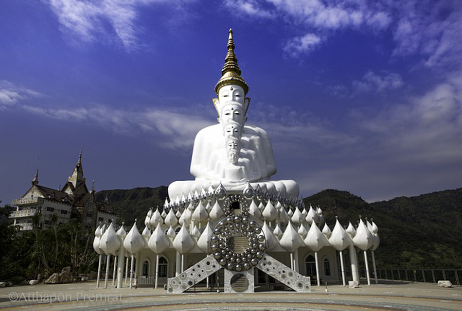
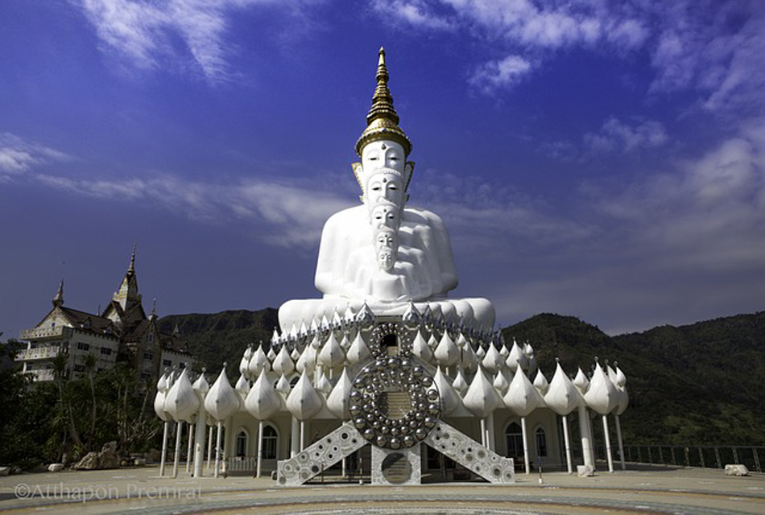

วัดชื่อดังที่ตั้งอยู่ท่ามกลางขุนเขาที่สลับซับซ้อนบนเขาค้อ มองเห็นวิวทิวทัศน์ได้รอบทิศทางทุกโมงยามแห่งความงาม ตั้งแต่เช้าใน วันที่อากาศดี เราจะได้เห็นทะเลหมอกลอยโอบล้อมรอบวัดเสมือนอยู่ท่ามกลางสรวงสวรรค์กันเลยทีเดียว
 

🔖 ตั้งอยู่บริเวณเนินเขาในหมู่บ้านทางแดง ตำบลแคมป์สน
ท่ามกลางธรรมชาติและบรรยากาศที่เงียบสงบ เพื่อเป็นที่สอนปฏิบัติการเจริญสติปัฏฐาน 4 ซึ่งเป็นหัวใจของพระพุทธศาสนา
สถานที่แห่งนี้แวดล้อมด้วยธรรมชาติมีภูเขาสูงใหญ่ซ้อนกันเป็นทิวแถว สิ่งที่น่าสนใจภายในวัด คือ อุโบสถพระพุทธเจ้า 5 องค์
ที่มีองค์พระพุทธรูปสีขาวนั่งลดหลั่นซ้อนกันลงมา และเจดีย์พระธาตุผาซ่อนแก้ว เจดีย์ที่ตกแต่งอย่างสวยงามด้วยกระเบื้องหลากสี
นอกจากนี้บนเขายังมีถ้ำซึ่งชาวบ้านทางแดงหลายคน ได้เห็นลูกแก้วลอยเหนือฟากฟ้าและลับหายเข้าไปในถ้ำบนยอดผา